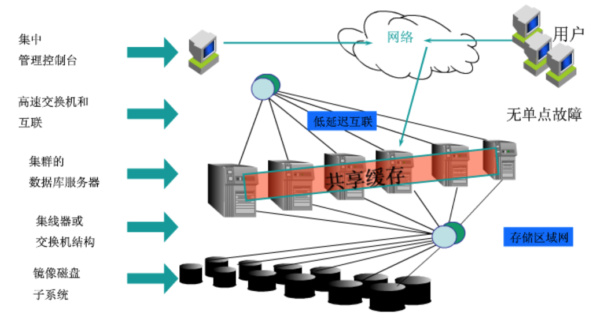
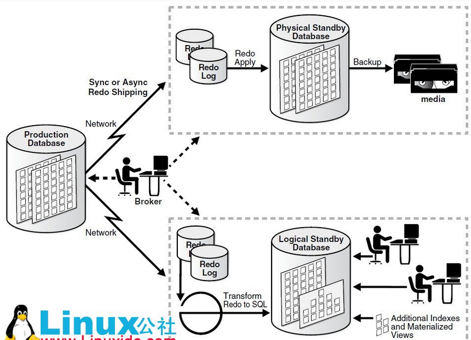
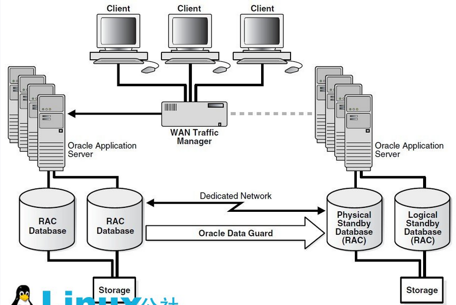

高可用
RAC（Real Application Clusters）

多个Oracle服务器组成一个共享的Cache，而这些Oracle服务器共享一个基于网络的存储。这个系统可以容忍单机/或是多机失败。不过系统内部的多个节点需要高速网络互连，基本上也就是要全部东西放在在一个机房内，或者说一个数据中心内。如果机房出故障，比如网络不通，那就坏了。所以仅仅用RAC还是满足不了一般互联网公司的重要业务的需要，重要业务需要多机房来容忍单个机房的事故。
Oracle RAC核心有两项：共享磁盘子系统，高速缓存合并。高速缓存合并使得集群中的节点可以通过高速集群互联高效地同步其内存高速缓存，从而最大限度地低降低磁盘I/O。高速缓存最重要的优势在于它能够使集群中所有节点的磁盘共享对所有数据的访问。数据无需在节点间进行分区。Oracle是唯一提供具备这一能力的开放系统数据库的厂商。其它声称可以运行在集群上的数据库软件需要对数据库数据进行分区。
Data Guard（最主要的功能是冗灾）

Data Guard这个方案就适合多机房的。某机房一个production的数据库，另外其他机房部署standby的数据库。Standby数据库分物理的和逻辑的。物理的standby数据库主要用于production失败后做切换。而逻辑的standby数据库则在平时可以分担production数据库的读负载。
MAA（Maximum Availability Architecture，最高可用性体系架构）

MAA(Maximum Availability Architecture)其实不是独立的第三种，而是前面两种的结合，来提供最高的可用性。每个机房内部署RAC集群，多个机房间用Data Guard同步。